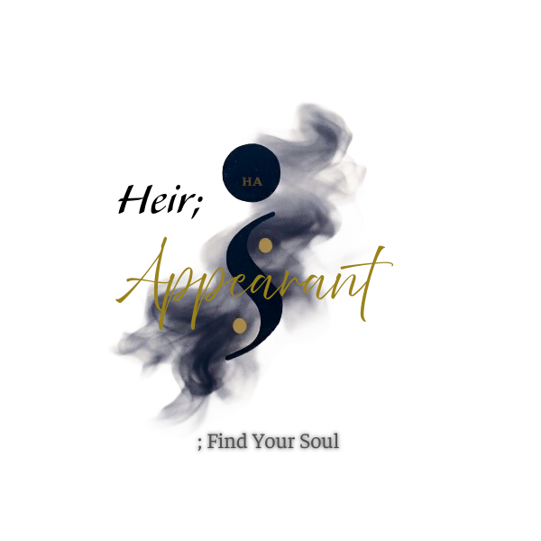

I
Audio
Infrastructure
System support, technical troubleshooting, stage infrastructure, signal flow, integration, and event audio support.
Professional audio support, creative development, and production services for artists, organizations, and live events.
;Find Your Soul Records exists to help transform meaningful ideas into lasting work through sound, story, craftsmanship, and technical excellence.
Start a Conversation
System support, technical troubleshooting, stage infrastructure, signal flow, integration, and event audio support.
Artist development, branding, vision planning, storytelling, and creative strategy.
Recording support, project development, production consultation, and collaborative execution.
Audio system installation, signal routing, equipment integration, stage infrastructure, cable management, and deployment support.
Creative direction and technical support for independent work with a lasting voice.
Dependable audio and production support for worship services and ministry gatherings.
Practical sound support for performances, programs, ceremonies, and student events.
Stage-focused audio support built around changing systems and demanding schedules.
Clear, considered support for presentations, productions, and public-facing work.
Technical and production help for gatherings that bring people together.
Attentive event audio for moments that deserve to be heard and remembered.
Professional sound and technical support for launches, meetings, and special events.
Close attention, direct collaboration, and work shaped around the people and purpose behind it.
Creative judgment grounded in hands-on technical work, practical problem-solving, and lived understanding.
Support that strengthens the work, builds confidence, and carries forward beyond a single project.
Ideas, stories, and voices are approached with the care and intention they deserve.
Concerts, community events, and production assistance.
Programming, playback systems, and live performance control.
Signal flow, system diagnostics, and reliable show support.
Patching, routing, power, and organized technical setups.
Session coordination, tracking assistance, and production workflow.
Artist direction, branding concepts, and project vision.
Planning, problem-solving, and clear next-step guidance.
;Find Your Soul Records was founded on a simple belief:
Meaningful work deserves meaningful support.
What began as a creative pursuit evolved into a growing commitment to production, technical support, creative development, and long-term artistic growth.
That commitment is especially important when art becomes part of how people understand themselves, learn together, gather in worship, preserve memory, and leave something behind. The same care belongs in every setting: with an artist finding their voice, a school bringing young musicians forward, an organization sharing its story, a church shaping a moment of connection, or a community keeping a piece of itself alive.
The goal has never been to produce content.
The goal is to help people create something worth remembering.
Story-led artistry shaped by identity, resilience, and authenticity, with an ongoing commitment to developing a voice that is distinctly his own.
Tell us what you're building.
Every engagement begins with a conversation.